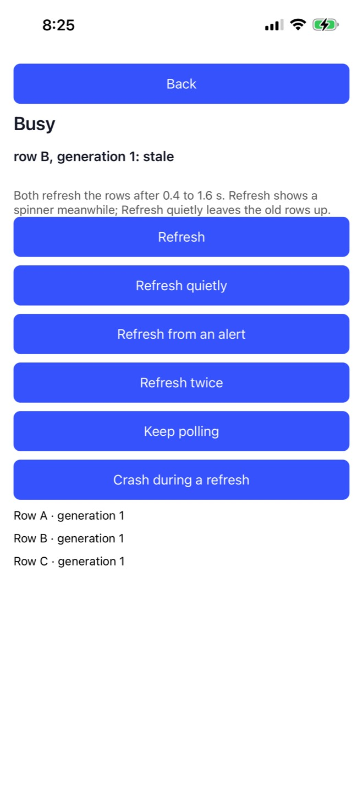

Gray-box mobile testing · Mobium
A screen can't tell you the work is done. The app can. How a test waits for the app's own word — measured on four devices: two real phones, a simulator and an emulator.
Lana Begunova · SDET — AI | UI | API · Seattle
$ mobium tap testid=busyRowB # launched normally
row B, generation 1: stale
$ mobium tap testid=busyRowB # launched with --gray-box
gray box: waited 955 ms for the app to go idle (busy: quiet)
row B, generation 2: current
Same screen. Same row. Same tap. On a real iPhone.
The second time, the test asked the app first.
A test sees what a person sees. The app knows what it is doing. Two ways to decide when to tap:
watch the screen
black box: on screen, still, enabled, uncovered
ask the app
gray box: busy, or idle and on screen
01
A screen that looks finished, a tap that is right by every check, and a row about to be replaced.
MobiumApp · Busy Demo
Refresh quietly starts 0.4 to 1.6 s of work and leaves the old rows up.
Then a new generation of rows replaces them.
Tap a row, and it says whether it was current or stale.
The app reports its own outcome, so no tool can grade itself.
iPhone 15 Plus

| check | what it asks | Row B, mid-work |
|---|---|---|
| visible | is it on the screen? | yes |
| stable | has it stopped moving? | yes |
| enabled | does it take input? | yes |
| receivesEvents | would a finger reach it? | yes |
Auto-wait is right about the screen. The screen is wrong about the app. No amount of looking harder fixes that.
10/10
Pixel 7 emulator
9/10
iPhone 17 Pro simulator
7/10
Pixel 8 Pro
9/10
iPhone 15 Plus
Stale taps after a quiet refresh, one command at a time. Not always, which is worse than always: a sleep makes it pass on a slow day and fail on a slower one.
02
The app says when it is busy. Mobium listens on channels it already holds. One flag turns it on.
const refresh = () => {
GrayBox.busy('quiet');
// ... the work; when it is done, the new rows ...
};
useEffect(() => {
GrayBox.idle('quiet'); // after the new rows render
}, [generation]);
Idle means done and on screen, not "the response arrived". Only the app can say that, so the app decides what counts as work.
| line | meaning |
|---|---|
| MOBIUM-GRAYBOX on | the library is listening |
| MOBIUM-GRAYBOX busy=1 tag=quiet | work started; one thing in flight |
| MOBIUM-GRAYBOX still busy=1 | every half second while it is |
| MOBIUM-GRAYBOX busy=0 tag=quiet | finished, and on screen |
| MOBIUM-GRAYBOX lift | a finger came up |
| MOBIUM-GRAYBOX away / back | the app left the foreground / returned |
Silent unless the app was launched with the gray box on: -MobiumGrayBox YES on iOS, the intent extra MobiumGrayBox=true on Android. A person running the same build never turns it on.
| device | channel | measured |
|---|---|---|
| iPhone | the log stream a session already holds | 1–4 ms |
| simulator | a log stream narrowed to the subsystem | live |
| Android | logcat, from the device's clock at launch | live, gap-proof |
No server in the app, and no port opened on anyone's phone. The way out is the device log, which a test already reads.
test file
"app": "dev.mobium.mobiumapp",
+ "grayBox": true,
"beforeEach": [ ... ]
command line · Python
$ mobium launch --gray-box \
dev.mobium.mobiumapp
device.launch(app, gray_box=True)
The same in MCP and every client — JavaScript, Go, Java, .NET. The steps don't change, and no sleep is added.
03
What a wait does, and what happens when the app can't answer: crashed, backgrounded, never finished, or not heard.
1 the lift
the last tap's finger-up has been heard
2 150 ms of grace
for work that tap starts to be announced
3 busy=0
nothing in flight, then find the target
0–15 ms
from the lift to the app's busy line, 200 trials
~35 ms
what a wait costs when the app is idle
While work is in flight the app restates it every half second, from a native timer. Unrenewed for 1.5 s, it is stale: the app crashed holding it, or was suspended.
Crash during a refresh, then a tap · emulator
$ mobium tap 300 30
tapped (300, 30)
gray box: not waited — the app stopped saying it is busy 3s ago (it was busy with doomed)
Without the lease, that tap would have waited 10 s for a dead app, then failed.
| edge | what Mobium does | shown on |
|---|---|---|
| work that never ends | refused after 10 s, naming it | all four |
| refresh from an alert | grace from the action's end; current | all four |
| two refreshes at once | both waited out | all four |
| Home, mid-work | not waited on: in the background | all four |
| a crash, mid-work | not waited on: lease out, or said away | all four |
| the log stream killed | says so, then hears again | all four |
gray box: waited 955 ms for the app to go idle (busy: quiet)
gray box: the app was idle
gray box: not waited — the app said it is in the background
gray box: not waited — not hearing the app: logcat stopped
error: testid=busyRowA failed check idle: the app says it is still busy after 10s, with poll — something in the app never finishes; to act on the screen as it is, launch the app again without gray_box
A check a result does not mention reads as one that ran. So none is silent, and every refusal names a remedy that works.
04
A fix has nothing to prove until the problem has shown up in the same run. And the recorder can change what it records.
| device | normal: stale | spinner: stale | gray box: stale |
|---|---|---|---|
| Pixel 7 emulator | 10 of 10 | 0 of 3 | 0 of 10 |
| iPhone 17 Pro simulator | 9 of 10 | 0 of 3 | 0 of 10 |
| Pixel 8 Pro | 7 of 10 | 0 of 3 | 0 of 10 |
| iPhone 15 Plus | 9 of 10 | 0 of 3 | 0 of 10 |
The check fails if the normal launch never taps a stale row. A zero is not a result until the same setup has shown it can come back non-zero.
The first Pixel recording showed no race at all. A full trace screenshots and reads the screen after every call, and every call waits for it.
no trace
1.4 s
full trace
5.1 s
trace, no screens
1.3 s
With the work lasting at most 1.6 s, five seconds per two taps let it finish first, every time. The demo records the screen as video and traces calls without screens.
05
An emulator, a simulator, a Pixel and an iPhone. The same app, the same script, the same two taps.
$ scripts/demo.sh emulator-5554 # or a simulator, or a phone
| act | what it does |
|---|---|
| 1 | launched normally: Refresh quietly, then Row B |
| 2 | the same two taps, launched with --gray-box |
| 3 | the same as a test, five times each way: flaky and steady |
| 4 | work that never ends; on virtual devices, a crash mid-work |
Each act keeps a screen recording, a trace, screenshots, the test reports and a transcript of every command with what it printed.
Android 15
normal Row B stale
gray box waited 1148 ms → current
suites 0 of 5 → 5 of 5
Graded by the app: each row says its own generation.
normal
gray box
iOS 26.5
normal Row B stale
gray box waited 1202 ms → current
suites 0 of 5 → 5 of 5
Graded by the app: each row says its own generation.
normal
gray box
Android 17
normal Row B stale
gray box waited 709 ms → current
suites 3 of 5 → 5 of 5
Three of five passing is what flaky looks like: it depends on how long the work took.
normal
gray box
iOS 26.6.2
normal Row B stale
gray box waited 955 ms → current
suites 0 of 5 → 5 of 5
Heard over the phone's own log, 1 to 4 ms after the app wrote each line.
normal
gray box
Act 5 · hooks
// the app, in a build made for testing GrayBox.register("raiseToast", (message) => { ToastAndroid.show(message, ToastAndroid.SHORT); return "shown"; }); # the test device.launch("dev.mobium.mobiumapp", gray_box=True) device.hook("raiseToast", "Toast raised by test script") 'shown'
signIn mobium → Welcome, mobium!
raiseTost → no hook named raiseTost
Pixel 8 Pro
iPhone 15 Plus
Every device, launched normally: the first tap after a quiet refresh landed on a stale row.
With the gray box: each tap waited as long as the work took — 709 to 1202 ms — and landed on the new rows.
The same test, one key apart: 3 passes in 20 without it, 20 in 20 with it.
The edges held: never-ending work refused at 10 s on all four, naming it.
1
Declare work at both ends, and call it done only once it is on screen.
2
Keep the hook silent unless a test turned it on.
3
Treat busy as a lease, so a dead app never holds a test hostage.
4
Make the black box fail first, in the same run, before trusting the fix.
5
Record a race with something that adds no time to each step.
Ask · wait · prove
The screen stays the default, and needs nothing from the app. For the work a screen hides, two calls in the app and one key in the test turn a flaky tap into a steady one.
The tool, and the app the demo ran against:
github.com/mobiumdev/mobium · github.com/mobiumdev/mobium-app
Lana Begunova · mobiumdev.github.io/guides/graybox